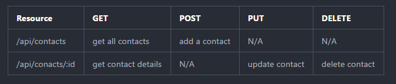
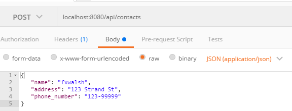
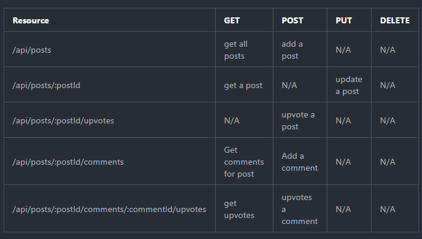

Node and Express 2
This lab develops our last lab, concentrating on Express. We will use Express implement APIs for the contact and Hacker News examples. In this lab you will learn how to route using Express, use parameterise URLs, and use parsing Middleware.
Contacts API
We will enhance the Contacts API from last weeks lab. The following is a suggested API design for Contacts API.
API Design
We are going to create an API to manage contact data. The proposed API is as follows:

Set up
In your labs repo, copy the node-lab1 folder from last weeks lab and name it node-lab2. If you do not have a solution for last weeks lab, you can get it from the solution repo at https://github.com/fxwalsh/node-samples-2018.git.
Install the following packages in your lab folder.
npm install --save body-parser npm install --save lodashBody-parser is a middleware that express can use to parse json.
- Update index.js to import and use body-parser.
import bodyParser from 'body-parser'; .... //configure body-parser app.use(bodyParser.json()); app.use(bodyParser.urlencoded()); ....
- Before we go any further, test the 'get all contacts' service using your Rest client(e.g. Postman). This should be still working the same from last weeks lab.

Add a Contact
- Now update the routing script, index.js, to the following code.
import express from 'express';
import contacts from './contacts';
const router = express.Router();
router.get('/', (req, res) => {
res.send({ contacts: contacts });
});
router.post('/', (req, res) => {
let newContact = req.body;
if (newContact){
contacts.push({name: newContact.name, address : newContact.address, phone_number: newContact.phone_number }) ;
res.status(201).send({message: "Contact Created"});
}else{
res.status(400).send({message: "Unable to find Contact in request. No Contact Found in body"});
}
});
export default router;Test with your Rest Client. You will need to supply a JSON representation of the new client in the HTTP body.

Update a Contact
- Updating a contact involves replacing a contact with the new data in the HTTP request body. This corresponds to a HTTP PUT. We will use the phone number as the key to identify contacts. Add the following routing code to the end of /api/contacts/index.js.
// Update a contact
router.put('/:id', (req, res) => {
const key = req.params.id;
const updateContact = req.body;
const index = contacts.map((contact)=>{
return contact.phone_number;
}).indexOf(key);
if (index !== -1) {
contacts.splice(index, 1, {name: updateContact.name, address: updateContact.address,
phone_number: updateContact.phone_number});
res.status(200).send({message: 'Contact Updated'});
} else {
res.status(400).send({message: 'Unable to find Contact in request. No Contact Found in body'});
}
});Test using a Rest client by doing a HTTP PUT using the URL of an existing contact as follows.
You will need to include a JSON document in the HTTP body to replace it.
Delete a Contact
- Include the following function and test that the function removes a contact.(e.g. perform a HTTP DELETE on http://localhost:8080/api/contacts/1)
// Delete a contact
router.delete('/:id', (req, res) => {
const key = req.params.id;
const index = contacts.map((contact)=>{
return contact.phone_number;
}).indexOf(key);
if (index > -1) {
contacts.splice(index, 1);
res.status(200).send({message: `Deleted contact with phone_number: ${key}.`});
} else {
res.status(400).send({message: `Unable to find contact with phone_number: ${key}.`});
}
});Commit it
Commit the changes you just made to your repo.
git add -A
git commit -m "added routing for add,update,delete contact"Hacker News API
Now we will create an API for Hacker News. Hacker News is a social news website focusing on computer science and entrepreneurship. In general, content that can be submitted is defined as "anything that gratifies one's intellectual curiosity".The following is a suggested API design for Hacker News Posts
API Design

Set up
- Create the following file structure for the posts and news scripts.
+api
+posts
+news
|- stubAPI.js
|- index.js- In /api/news, create two new javascript files, stubAPI.js and index.js.:
+api
+news
|- stubAPI.js
|- index.jsStubAPI.js
- The stubAPI.js will take the place of the Mongo database for the time being. In stubAPI.js, enter the following code:
import _ from 'lodash';
const posts = [
{id: 1,
title: 'India - Tiger population sees 30% increase.',
link: 'http://www.bbc.com/news/world-asia-30896028',
username: 'jbloggs',
comments: [],
upvotes: 10,
},
{
id: 2,
title: 'The button that is not.',
link: 'http://blog.nuclearsecrecy.com/2014/12/15/button-isnt/',
username: 'notme',
comments: [],
upvotes: 12,
},
{
id: 3,
title: 'Google Nears $1B Investment in SpaceX',
link: null,
username: 'notme',
comments: [],
upvotes: 12,
},
{
id: 4,
title: 'Coinbase Raises $75M from DFJ Growth, USAA, and More',
link: 'http://blog.coinbase.com/post/108642362357/coinbase-raises-75m-from-dfj-growth-usaa-nyse',
username: 'psmith',
comments: [],
upvotes: 2,
},
];
const stubAPI = {
getAll: () => {
return posts;
},
add: (t, l) => {
if (!(t && l)) return false;
let id = 1;
const last = _.last(posts);
if (last) {
id = last.id + 1;
}
let len = posts.length;
let newLen = posts.push({
'id': id,
'title': t, 'link': l, 'username': '', 'comments': [], 'upvotes': 0});
return newLen > len?id:-1;
},
upvote: (id) => {
const index = _.findIndex(posts,
(post) => {
return post.id == id;
} );
if (index !== -1) {
posts[index].upvotes += 1;
return true;
}
return false;
},
getPost: (id) => {
let result = null;
const index = _.findIndex(posts,
(post) => {
return post.id == id;
} );
if (index !== -1) {
result = posts[index];
}
return result;
},
addComment: (postId, c, n) => {
let result = false;
const post = stubAPI.getPost(postId);
let id = 1;
if (post) {
const last = _.last(post.comments);
if (last) {
id = last.id + 1;
}
post.comments.push({'id': id,
'comment': c, 'author': n, 'upvotes': 0} );
result = true;
}
return result;
},
upvoteComment: (postId, commentId) => {
let result = false;
const post = stubAPI.getPost(postId);
if (post) {
const index = _.findIndex(post.comments, (c) => {
return c.id == commentId;
});
if (index !== -1) {
post.comments[index].upvotes += 1;
result = true;
}
}
return result;
},
};
export default stubAPI;Routing
- We will use the same service to handle hacker news as well as contacts. We will need to add the a new route in server.js for Hacker News. Add the following statements to the top of server.js to import and use the hacker news routes.
import postsRouter from './api/posts';
......
app.use('/api/posts', postsRouter);Get and Post
Getting and posting posts is very similar to the Contacts API. Add the following to api/posts/index.js:
import express from 'express';
import stubAPI from './stubAPI';
const router = express.Router();
// get all posts
router.get('/', (req, res) => {
const posts = stubAPI.getAll();
res.send({posts: posts});
});
// Add a post
router.post('/', (req, res) => {
const newPost = req.body;
if (newPost && stubAPI.add(newPost.title, newPost.link)) {
return res.status(201).send({message: 'Posts Created'});
}
return res.status(400).send({message: 'Unable to find Post in request.'});
});
// get a post
router.get('/:id', (req, res) => {
const id = req.params.id;
const post = stubAPI.getPost(id);
if (post) {
return res.status(200).send(post);
}
return res.status(404).send({message: `Unable to find Post ${id}`});
});
export default router;- Save and test using your Rest client. Make sure any changes using POST are visible using GET on http://locahost:8080/api/posts
Upvotes and Comments.
- Add the following route to allow for post upvotes:
// upvote a post
router.post('/:id/upvote', (req, res) => {
const id = req.params.id;
if (stubAPI.upvote(id)) {
return res.status(200).send({message: `Post ${id} Upvoted`});
}
return res.status(404).send({message: `Unable to find Post ${id}`});
});The function upvotes the corresponding post on a post request to a resource matching the pattern /:id/upvote
Test using your Rest client, making sure upvotes are recorded correctly.
Commit it
- Commit the changes you just made to your repo.
git add -A
git commit -m "added routing for add,update,delete contact"Challenge
Examine and understand the code for adding a post and upvoting a post. Now try to implement adding and upvoting comments.
hint: an example comment would be
{"comment":"this is a great post!", "author":"fxwalsh"}. Refer to the API Design table for the correct parametised routing. The functions you will need from the stubAPI are addComment(postId, comment.comment, comment.author) and upvoteComment(postId, commentId).